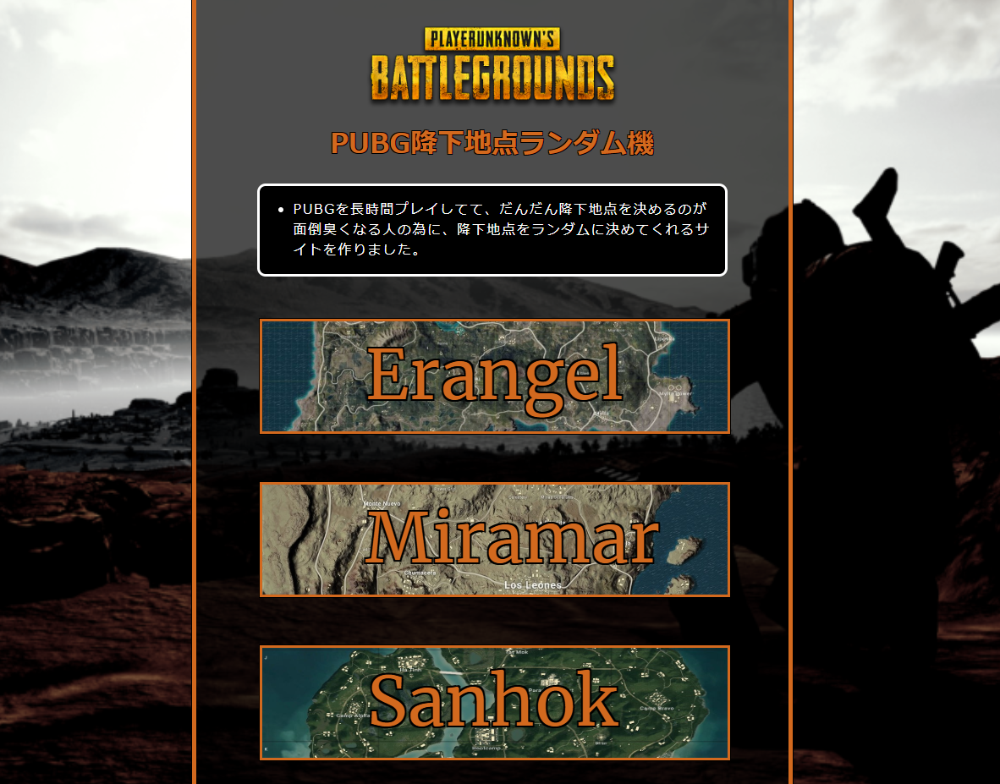

Knowledge of programming
専門学生の技術系・WEB開発ブログ
Blog
Profile
Portfolio
HTML/CSS
JavaScript
サイト運営
その他
PUBGで使える、降下地点をランダムに決めてくれるサイトを作ってみた
友達とPUBGをやっていると、友達が「毎回降りる場所決めるの面倒臭い...ランダムに決めてくれるやつあったらいいな」と言ってましたので、ランダムに降下地点を決めてくれるサイトを作ってみました。
こちら↓

現在出ている３マップあり、激戦区の除外やsanhokのみ過疎地にピンを指す機能もあります。ぜひ使って頂けたら幸いです。